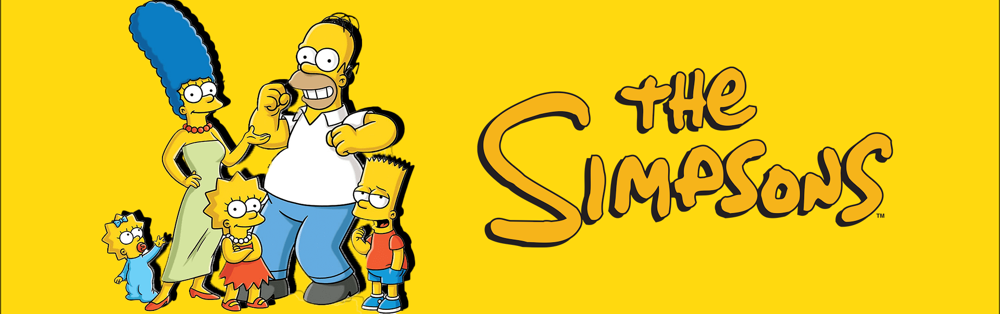
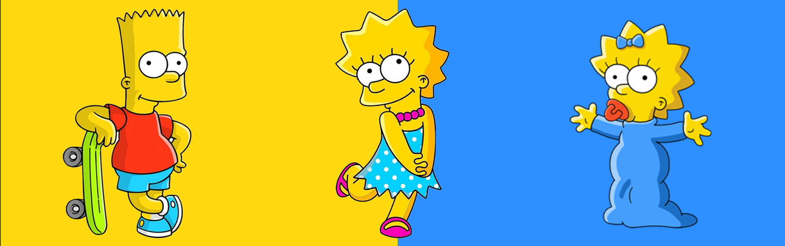

Homer es el primer y único hijo legítimo de Abraham Simpson y de Mona J. Simpson. Está casado con Marjorie Bouvier y es el padre de Bartholomew (Bart), Lisa y Margaret (Maggie). Es el medio hermano de Herb Powell, cuya madre trabajaba en una feria y que tuvo un romance con Abraham mientras ella pasaba por Springfield. También es medio hermano de Abbie, la hija inglesa de Edwina, una mujer de quien Abraham se enamoró en Gran Bretaña durante la Segunda Guerra Mundial. Es el sobrino de Cyrus Simpson, hermano de Abraham Simpson, según un especial de Navidad, de Tyrone Simpson según el episodio
siguienteMarge es la esposa de homero y madre de Bart, Lisa y Maggie; ella es ama de casa y cuida a sus hijos desde que nacieron, no tiene un trabajo como en especificio aunque se dedica a el trabajo freelance
siguiente
Bart es el problemático de la familia. Su rol principal es el de hacer travesuras, además de meterse él mismo en líos o a los demás, y así generar tramas para los episodios. Su presencia en la familia también plantea los problemas típicos que conlleva la convivencia de dos hermanos de poca diferencia de edad que suelen contrastar en sus intereses personales. Bart refleja el típico preadolescente rebelde que empieza a sentirse mayor y quiere deshacerse de la vigilancia de sus padres, cosa que rara vez consigue. Los guionistas de la serie lo tratan como el protagonista de la misma, por lo que pocas veces es castigado por las malas acciones que comete, sobre todo defendiéndolo bajo la protección de una madre excesivamente cariñosa
siguienteLisa Marie Simpson es un personaje de la serie de televisión de dibujos animados Los Simpson. Es la hija mediana de Homer y Marge Simpson y hermana de Bart y Maggie. Goza de notable protagonismo y complejidad en la serie.
siguienteMargaret Simpson, conocida como Maggie Simpson, es un personaje ficticio de la serie de televisión de dibujos animados Los Simpson. Es la tercera hija del matrimonio protagonista, Homer y Marge Simpson, y la más joven de ellos. Sus hermanos mayores son Bart y Lisa Simpson.
INICIO